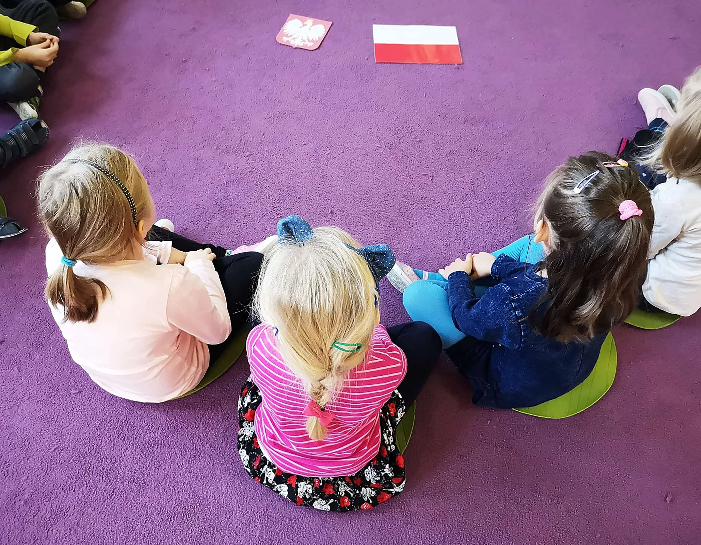
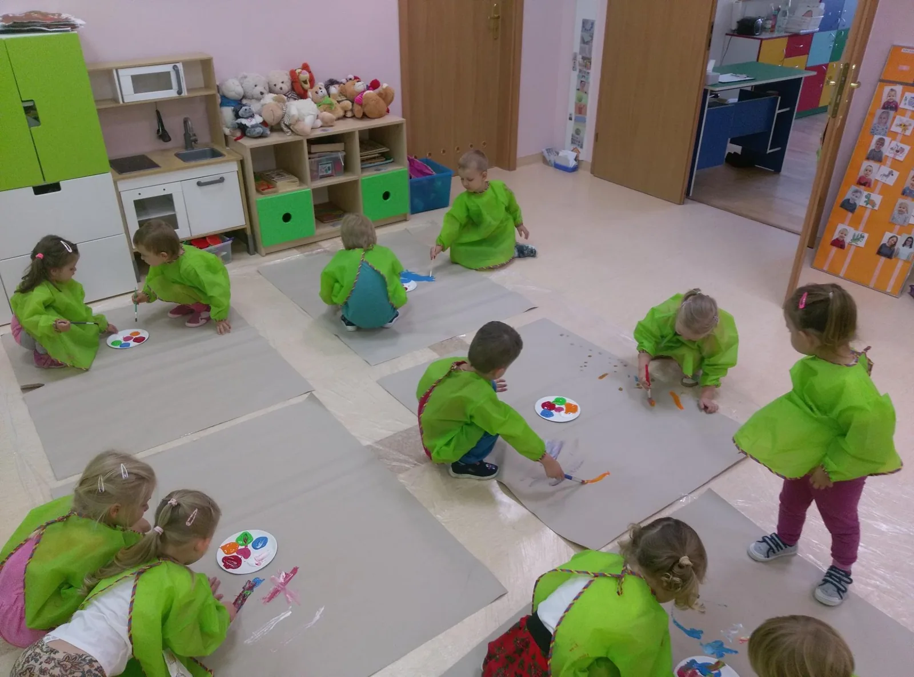
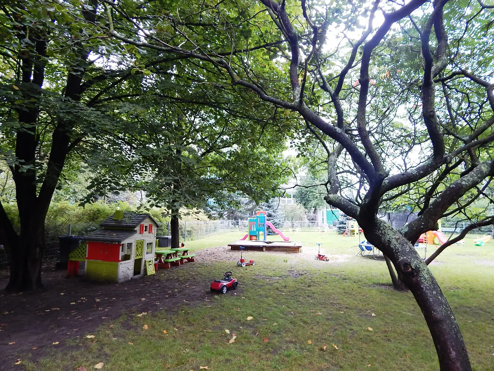

Akceptacja
Każde dziecko przyjmujemy takim, jakie jest — w cieple, życzliwości i poczuciu bezpieczeństwa.
Jesteśmy kameralnym, niepublicznym przedszkolem łączącym edukację językową i muzyczną z troską o indywidualny rozwój każdego dziecka.

„Czarodziejski Dworek" to wyjątkowe przedszkole, w którym odkryte i docenione zostaną mocne strony Twojego dziecka. Działamy od września 2003 roku (ewidencja przedszkoli niepublicznych nr 111/PN).
Naszym celem jest dbanie o wszechstronny rozwój każdego dziecka i zaszczepienie w nim twórczych pasji — w kameralnych grupach, blisko każdego malucha. Godziny pracy dostosowujemy do potrzeb rodziców: pracujemy od 7.00 do 18.00.
Chcemy, by w „Czarodziejskim Dworku" odkryte i docenione zostały mocne strony Twojego dziecka. Dbamy o jego wszechstronny rozwój i zaszczepiamy w nim twórcze pasje — w atmosferze akceptacji, blisko każdego malucha.
Każde dziecko przyjmujemy takim, jakie jest — w cieple, życzliwości i poczuciu bezpieczeństwa.
Język, muzyka i twórcze zajęcia dopasowane do wieku i możliwości każdego dziecka.
Zaszczepiamy ciekawość świata i rozwijamy mocne strony — tak, by dziecko wierzyło w siebie.
Bliski kontakt, konsultacje i szkolenia dla rodziców — działamy razem dla dobra dziecka.

Dzień w przedszkolu to naturalny kontakt z językiem obcym i muzyką, twórcze zabawy i ruch. Nie pospieszamy — wspieramy dziecko w jego własnym tempie i budujemy w nim wiarę we własne możliwości.
Kameralne grupy i specjaliści na miejscu pozwalają nam naprawdę poznać każde dziecko i dopasować wsparcie do jego potrzeb.
Maksymalnie 14 dzieci i 2 nauczycieli w grupie — więcej uwagi i czasu dla każdego malucha.
Logopeda, psycholog, terapeuci SI i pedagodzy w jednym miejscu — diagnoza i pomoc bez szukania jej poza przedszkolem.
Dostosowujemy tempo i formę zajęć, a dzieci z opinią obejmujemy bezpłatnym wczesnym wspomaganiem rozwoju (WWR).

Stawiamy na rodzinną, życzliwą atmosferę, w której dziecko czuje się akceptowane i bezpieczne. Przestronne, kolorowe sale i własny ogród dają miejsce do zabawy, odpoczynku i odkrywania świata.
Dbamy o bezpieczeństwo na każdym kroku — od ogrodzonego terenu po stałą, uważną opiekę.
Zamknięty plac zabaw i własny parking — dzieci bawią się na bezpiecznym, dozorowanym terenie.
Dwóch nauczycieli w kameralnej grupie czuwa nad każdym dzieckiem przez cały dzień.
Świeże, zbilansowane jedzenie uwzględniające diety i alergie naszych podopiecznych.

Zapraszamy na spotkanie i zwiedzanie przedszkola. Pokażemy sale, ogród i opowiemy o naszym programie.